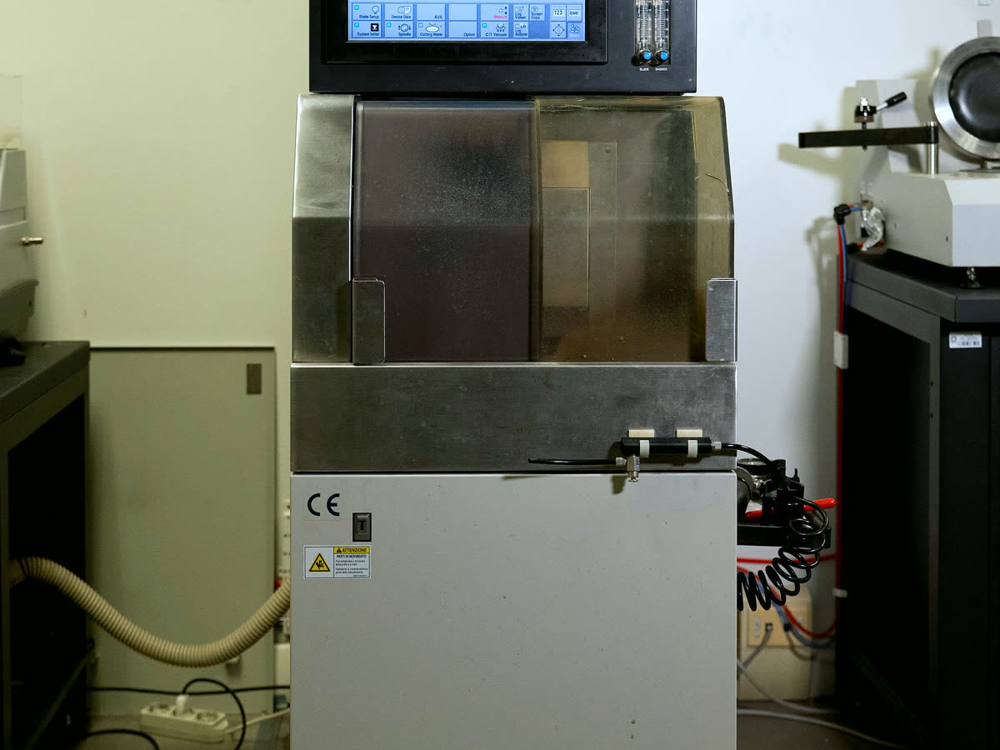

Equipment › Cut and shape
Dicing saw for 150 mm wafers
Disco DAD3220
Diamond-blade dicing of wafers and crystals up to 150 mm.
Work with us on this instrument
What it does
An automatic dicing saw. A thin ring of diamond grains, held in a metal or resin bond, spins at up to 40,000 rpm and cuts the wafer while jets of water cool the blade and carry the debris away. The wafer is held by vacuum on the table, usually on dicing tape in a frame; the machine aligns it to a flat, an edge or marks on its surface, focuses its microscope and checks the width of the cut (the kerf) as it goes.
A cut can go through the whole thickness, to separate crystals, strips and dies, or stop at a set depth to make grooves. The table indexes in steps of 0.1 µm with a positioning accuracy of 5 µm over 160 mm, and the blade returns to the same height within 1 µm, so parallel cuts stay parallel and grooves keep the same depth across the wafer.
Silicon, germanium and quartz are our daily materials; the saw also cuts glass, ceramics and soft metal alloys. Every cut leaves a thin damaged layer on the new faces: on crystals meant for particle beams we remove it by chemical etching, so the lattice is undamaged right up to the surface.
What we use it for
Bent crystals for particle beams
Silicon strips that steer particle beams at the LHC, in TWOCRYST and for Mu2e at Fermilab, cut along the planes chosen for channeling and then etched.
Detector arrays from one wafer
For BULLKID the saw carves a thick silicon wafer into an array of small detectors that stay joined to a common base: the cuts stop just short of the bottom.
Plates for X-ray and γ-ray optics
Tiles for Laue lenses, and plates bent by grooving: a series of shallow grooves on one face bends the plate permanently, with no holder.
Working with us
Tell us the material, its thickness and the cut you need. We can run test cuts on your material, choose the blade with you and cut samples for joint projects. Wafers larger than 150 mm go on the DAD3351.